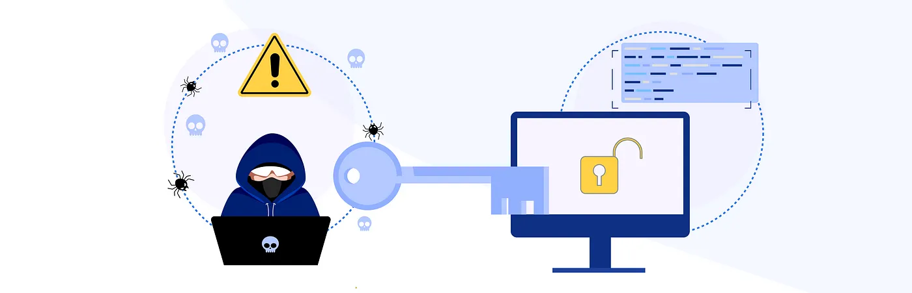
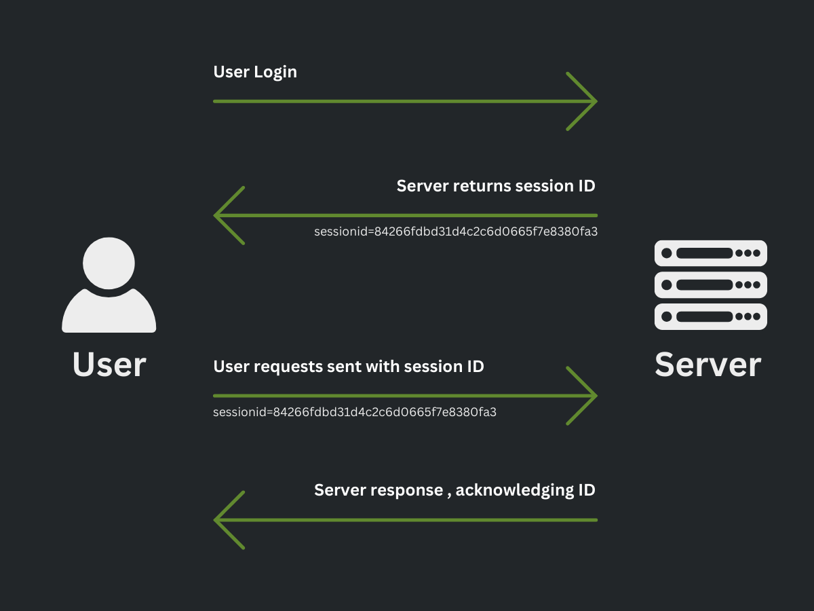
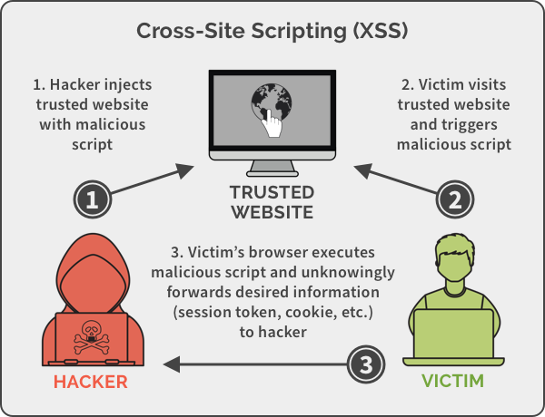
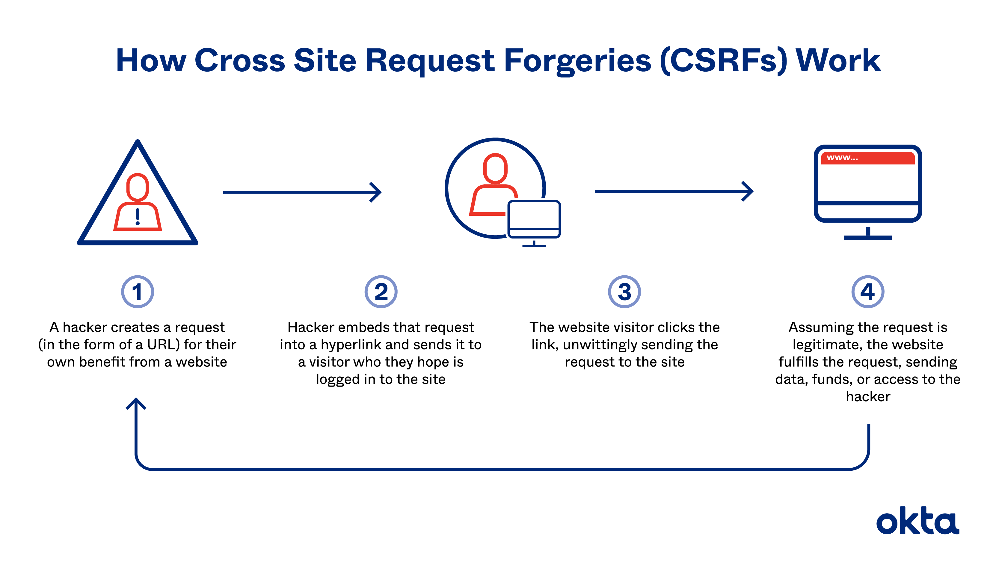
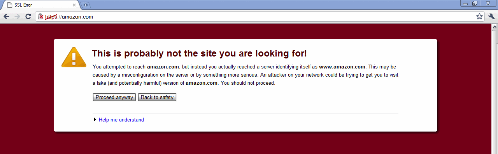
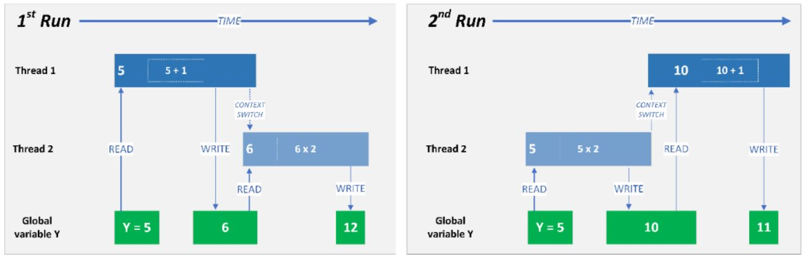

Content
In modern software development, applications are frequently exposed to numerous threats, particularly in handling user interactions. Vulnerabilities in user action controls, such as broken authentication, cross-site scripting (XSS), and race conditions, can leave applications susceptible to attacks that compromise data integrity, security, and user privacy.
Broken Authentication
Broken authentication and session management could allow attackers to bypass authentication mechanisms, hijack user sessions to impersonate users and gain unauthorised access to server resources.
Broken authentication occurs when authentication mechanisms are not implemented securely.
- Weak passwords: Lack of input validation where client users are allowed to set short, easily guessable passwords.
- Password storage: Passwords are stored as plaintext in the database. If the database is stolen, users' passwords are exposed.
- Password reuse: Allowing users to reuse old passwords weakens security over time.

Mitigation Strategies:
- Enforce strong password policies: Require complex passwords and encourage multi-factor authentication (MFA) for critical operations. Regex expressions and validation for expected passwords.
- Communication channels: Ensure that all authentication-related requests use HTTPS to encrypt data transmitted between the client and the server.
- Account lockout mechanisms: Implement a mechanism that temporarily locks the account after multiple failed login attempts to prevent brute force attacks.
Broken Session Management
Session management controls how sessions are created, maintained, and destroyed. Insecure session management can lead to session hijacking and fixation attacks.
- Session Hijacking: Attackers can steal active session tokens and impersonate users.
- Session Fixation: Attackers provide a session ID to a victim before logging in and then hijack their session using the same ID.

Mitigation Strategies:
- Random Generated Tokens: Each user session is associated with a unique session token.
- Hashed Storage: Session tokens are cryptographically hashed to ensure attackers cannot deduce the token generation algorithm.
- Session Expiration: Implement session timeouts and expiration of tokens
XSS
Cross-Site Scripting (XSS) is a client-side vulnerability where an attacker injects malicious JavaScript into a website's backend storage or directly into its content. When this malicious script is executed in the victim's browser, the attacker can gain unauthorised access to sensitive information or perform actions as the victim.

Mitigation Strategies:
• Input validation and sanitization: Always validate and sanitize user inputs before processing them. Ensure that special characters like <, >, and " are properly escaped.
• Output encoding: Encode any user-generated data before displaying it on a webpage. Use functions that escape HTML, JavaScript, and CSS elements in the output.
• Content Security Policy (CSP): Implement a strict Content Security Policy to restrict the execution of inline scripts and reduce the risk of script-based attacks.
CSRF
Cross-site request forgery occurs when an attacker tricks a user into performing unwanted actions where they are already authenticated. An attacker forges a request by exploiting the fact that the user is already authenticated, with session tokens stored in the browser.
If the attacker can trick the user into interacting with a malicious website (hence, "cross-site"), the browser automatically includes the stored session tokens when making the request. The server cannot distinguish between a legitimate user-initiated request and the forged one (as the session token is passed in), and assumes the authenticated user initiated it and grants authorisation.

Mitigation Strategies:
CSRF Cheat Sheat
- CSRF Token: Create CSRF tokens to verify where a request is coming from. Each CSRF token is linked to a specific user session, making it unique for every user. Allow access to server resources only if both the CSRF token and session token match the user's session.
- Brower Storage: Configure HTTP-only cookies with the SameSite attribute to ensure cookies are only sent with requests from the same front-end URL, preventing them from being shared with other sites.
IMPORTANT: Cross-Site Scripting (XSS) can defeat most CSRF mitigation techniques!
If a <script> tag executes a API request within it, even with HTTP-only cookies, all credentials can be sent with the cookies, making them vulnerable.
Invalid Forwarding and Redirecting
Invalid forwarding and redirecting occur when attackers manipulate URL parameters to redirect users to unintended locations or bypass authentication and authorization checks.
Risks:
• Open Redirect Vulnerabilities: Attackers can manipulate redirect parameters to send users to malicious websites, leading to phishing attacks or malware distribution.
• Unintended Access to Restricted Pages: An attacker could exploit forwarding mechanisms to bypass access controls and access sensitive pages without proper authorization.
Mitigation Strategies:
• Whitelist redirect destinations: Instead of allowing freeform redirects, restrict redirects to a predefined list of trusted URLs.
• Implement proper access controls: Ensure that redirects and forwards check the user’s authentication status and permissions before granting access to the destination.
• Parameter validation: Validate and sanitize any user-controlled input, such as URLs and parameters, before redirecting users.

Race Conditions
Race conditions occur when multiple processes or threads access and manipulate shared resources in an unsynchronised manner, leading to data corruption or unintended behaviour. These vulnerabilities are particularly prevalent in multi-threaded applications or systems that handle concurrent requests.
By default, Flask servers run synchronously (each request is processed sequentially). However, there are ways to run the server asynchronously, such as via an ASGI server like Hypercorn or Uvicorn.
You are not expected to have a Flask server run asynchronously, but your code should be designed to easily adapt to an asynchronous platform using existing async and await features.
Risks:
• Data Integrity Issues: When multiple users or processes attempt to modify the same data simultaneously, it can lead to inconsistent or incorrect data being saved or processed.
• Exploitation of Time Gaps: Attackers can exploit the time gap between checking a condition and performing an operation. For example, in a banking application, an attacker might be able to transfer money multiple times by exploiting race conditions between balance checks and transaction approvals.

Example of a simple race condition where the order of threads changes the result
Mitigation Strategies:
• Locking mechanisms: Use locking mechanisms (e.g., mutexes or semaphores) to ensure that only one process can access a critical section of code or resource at a time.
• Atomic operations: Where possible, use atomic operations to ensure that critical tasks are completed in one step, avoiding interruptions by other processes.
• Queue management: Implement queue systems that control the order of operations and prevent concurrent access to sensitive data or resources.
Why User Action Control Security is Critical
Ensuring security in user action controls is a vital aspect of secure software development. These vulnerabilities directly impact the user experience and can lead to severe breaches, including unauthorised access, data theft, or manipulation of system processes. Understanding these threats and implementing strong defences helps to build trust between users and the application, while also safeguarding sensitive information.
GuidedCTF
Explore a hands-on exercise in SQL injection vulnerability exploitation by following this link.
Emerging Threats and Solutions
With the rise of more sophisticated attack techniques, traditional defences against vulnerabilities like XSS and CSRF are no longer sufficient. Emerging solutions include:
• Web Application Firewalls (WAFs): Automatically filter and monitor HTTP requests to block attacks such as XSS, SQL Injection, and CSRF before they reach the application.
• Zero Trust Architecture: Every user action must be verified and authenticated, regardless of their previous authentication state, ensuring that every interaction is treated as potentially harmful unless proven otherwise.
Practical Implementation Tips
To ensure a secure development lifecycle:
• Security Audits and Code Reviews: Regularly perform audits and peer code reviews with a focus on identifying potential vulnerabilities in user action controls.
• Integrating Security Tools: Leverage tools such as static analysis scanners and automated vulnerability testing platforms (e.g., OWASP ZAP) in your CI/CD pipeline.
• Security Training: Developers should receive regular training on secure coding practices to stay current with the latest vulnerabilities and mitigation techniques.
![[online-only image]](https://kingsnet.kings.edu.au/images/UserUploadedImages/1754/banner2.jpg)